APISIX 是一个云原生、高性能、可扩展的微服务 API 开源网关，基于OpenResty(Nginx+Lua)和etcd来实现，对比传统的API网关，具有动态路由和热插件加载的特点。系统本身自带前端，可以手动配置路由、负载均衡、限速限流、熔断、金丝雀发布、身份验证、可监控等插件，操作方便。可以使用Apache APISIX来处理传统的南北流量，以及服务之间的东西流量。它也可以用作k8s入口控制器，APISIX是用Lua语言开发，语言相对简单，容易上手，同时可以按自己的需求进行系统的二次开发以及开发自己的插件。
apisix的整体架构图如下
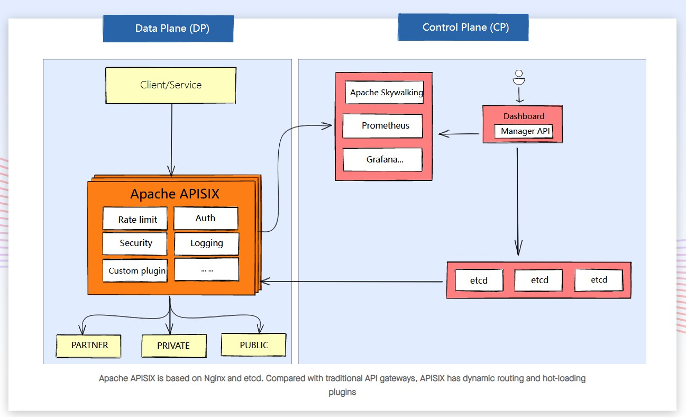
apisix-ingress-controller是一个Apache APISIX 控制平面组件。目前它服务于Kubernetes集群，具体架构图如下，具体介绍可以参考github文档https://github.com/apache/apisix-ingress-controller
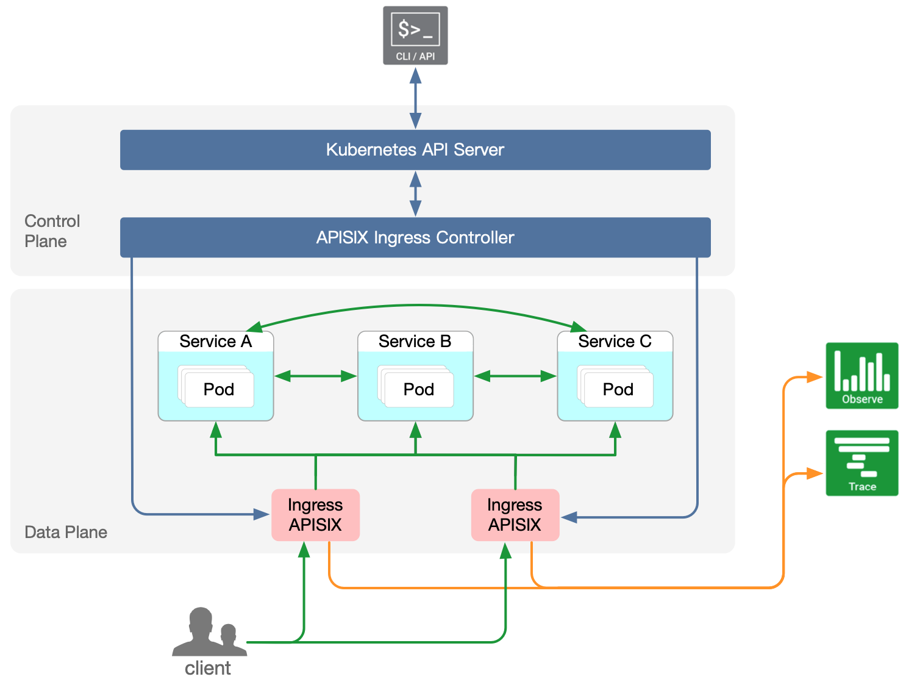
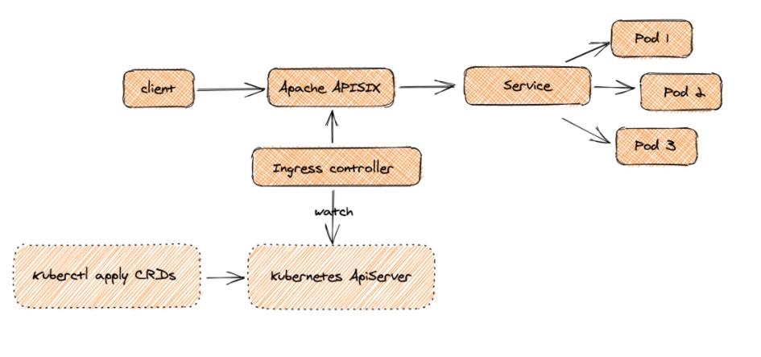
apisix-ingress-controller是Kubernetes的另一个入口控制器，使用Apache APISIX作为高性能反向代理。
它是通过使用声明性配置来配置的，例如ApisixRoute， ApisixUpstream， Ingress。所有这些资源都会被监视并转换为Apache APISIX中的相应资源。
部署apisix 因为现在是部署apisix到k8s集群上，所以我们这里采用helm方式部署，这里默认将dashboard也部署上，具体部署步骤如下。
1 2 3 4 5 6 7 8 9 10 11 12 13 --set gateway.type =LoadBalancer \ --set ingress-controller.enabled =true \ --set dashboard.enabled =true \ --set etcd.persistence.size ="10Gi" \ --namespace ingress-apisix \ --set ingress-controller.config.apisix.serviceNamespace =ingress-apisix
helm部署成功后，会部署etcd、dashboard、apisix-ingress-controller和apisix到集群中
1 2 3 4 5 6 7 8 9 10 11 12 13 14 15 16 [root@ VM-0 -13 -centos ~]# kubectl get pod,svc -n ingress-apisix NAME READY STATUS RESTARTS AGE pod/apisix-848 c9485d4-qs4xp 1 /1 Running 0 23 h pod/apisix-dashboard-75 d4485df7-z8g67 1 /1 Running 0 20 h pod/apisix-etcd-0 1 /1 Running 0 23 h pod/apisix-etcd-1 1 /1 Running 0 23 h pod/apisix-etcd-2 1 /1 Running 0 23 h pod/apisix-ingress-controller-84 b76475-zkxj7 1 /1 Running 0 23 h NAME TYPE CLUSTER-IP EXTERNAL-IP PORT(S) AGE service/apisix-admin ClusterIP 172.16 .82 .101 <none> 9180 /TCP 23 h service/apisix-dashboard ClusterIP 172.16 .9 .37 <none> 80 /TCP 23 h service/apisix-etcd ClusterIP 172.16 .104 .205 <none> 2379 /TCP,2380 /TCP 23 h service/apisix-etcd-headless ClusterIP None <none> 2379 /TCP,2380 /TCP 23 h service/apisix-gateway LoadBalancer 172.16 .16 .160 10.0 .21 .21 80 :31659 /TCP 23 h service/apisix-ingress-controller ClusterIP 172.16 .45 .68 <none> 80 /TCP 23 h
这里一共创建了6个service，具体作用如下：
apisix-gateway：处理真实流量 apisix-admin：它充当处理所有配置更改的控制平面 apisix-ingress-controller，它公开apisix-ingress-controller的指标 apisix-etcd、apisix-etcd-headless：并用于 etcd 服务和内部通信 apisix-dashboard：Apache APISIX前端界面 apisix-dashboard的使用 配置ingress访问dashboard ingress的yaml配置如下，这里我ingress-controller的class配置的是ingress，这里根据实际配置即可
1 2 3 4 5 6 7 8 9 10 11 12 13 14 15 16 17 apiVersion: networking.k8s.io/v1beta1 kind: Ingress metadata: annotations: kubernetes.io/ingress.class: ingress name: apisix-ingress namespace: ingress-apisix spec: rules: - host: apisix.tke.niewx.cn http: paths: - backend: serviceName: apisix-dashboard servicePort: 80 path: / pathType: ImplementationSpecific
浏览器输入apisix.tke.niewx.cn，会出现登录页面，登录账号密码默认为admin/admin
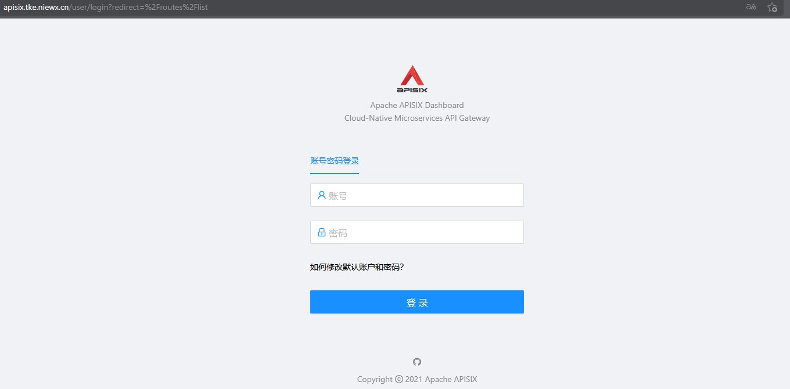
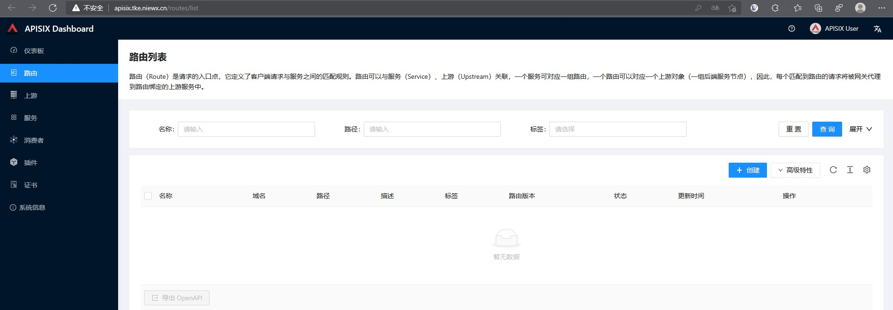
嵌入grafana监控图 apisix的Dashboard是支持嵌入grafana的监控面板，如果你将监控接入了prometheus话，可以在上面配置下grafana的监控面板，这里需要grafana支持嵌入才行，需要在grafana加上如下配置。
1 2 3 4 5 6 7 8 vim /usr/share/grafana/conf/defaults.ini allow_embedding = true [auth.anonymous] enabled = true
配置好之后，在apisix的Dashboard配置grafana面板地址即可，这里apisix的监控模板可以在grafana官网搜11719这个id进行配置。
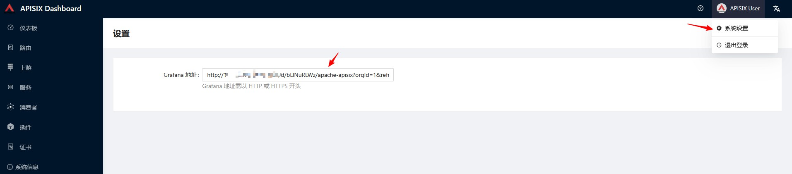
apisix的入门使用 apisix-Dashboard配置路由规则访问 部署springboot demo 可以参考下面yaml部署spiringboot这个demo到k8s集群，后面配置apisix来访问这个服务。
1 2 3 4 5 6 7 8 9 10 11 12 13 14 15 16 17 18 19 20 21 22 23 24 25 26 27 28 29 30 31 32 33 34 35 36 37 38 39 40 41 42 43 44 45 46 47 48 49 50 51 52 53 54 55 56 57 58 59 60 61 62 63 apiVersion: apps/v1 kind: Deployment metadata: labels: k8s-app: springboot qcloud-app: springboot name: springboot namespace: tke-test spec: replicas: 1 selector: matchLabels: k8s-app: springboot qcloud-app: springboot template: metadata: labels: k8s-app: springboot qcloud-app: springboot spec: containers: - env: - name: PATH value: /usr/local/openjdk-8/bin:/usr/local/sbin:/usr/local/bin:/usr/sbin:/usr/bin:/sbin:/bin - name: JAVA_HOME value: /usr/local/openjdk-8 - name: LANG value: C.UTF-8 - name: JAVA_VERSION value: 8u292 - name: MAVEN_HOME value: /usr/share/maven - name: MAVEN_CONFIG value: /root/.m2 image: nwx-test.tencentcloudcr.com/nwx/springboot:springboot-a4799906973669a3f4ece49a26b537e0554c32de imagePullPolicy: IfNotPresent name: springboot resources: limits: cpu: "1" memory: 2Gi requests: cpu: 100m memory: 128Mi dnsPolicy: ClusterFirst restartPolicy: Always --- apiVersion: v1 kind: Service metadata: name: springboot namespace: tke-test spec: ports: - name: 8080 -8080 -tcp port: 8080 protocol: TCP targetPort: 8080 selector: k8s-app: springboot qcloud-app: springboot sessionAffinity: None type: ClusterIP
上游 上游列表包含了已创建的上游服务（即后端服务），可以对上游服务的多个目标节点进行负载均衡和健康检查，这里我们给部署的springboot服务配置一个上游
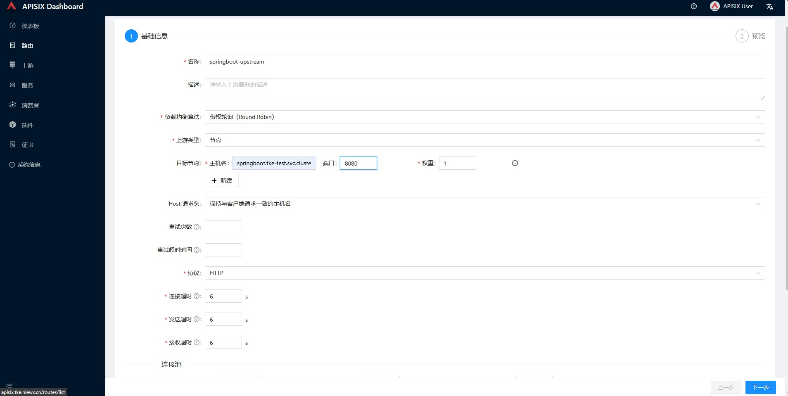
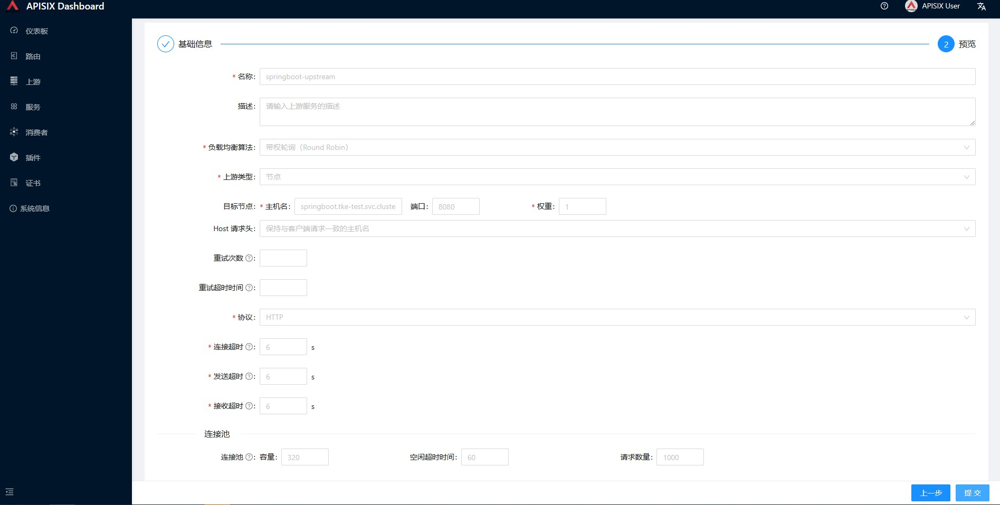
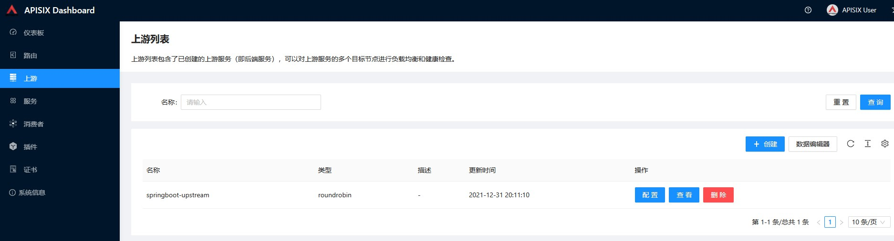
服务 服务由路由中公共的插件配置、上游目标信息组合而成。服务与路由、上游关联，一个服务可对应一组上游节点、可被多条路由绑定。我们新建一个服务，绑定springboot这个上游，并配置basic-auth这个插件
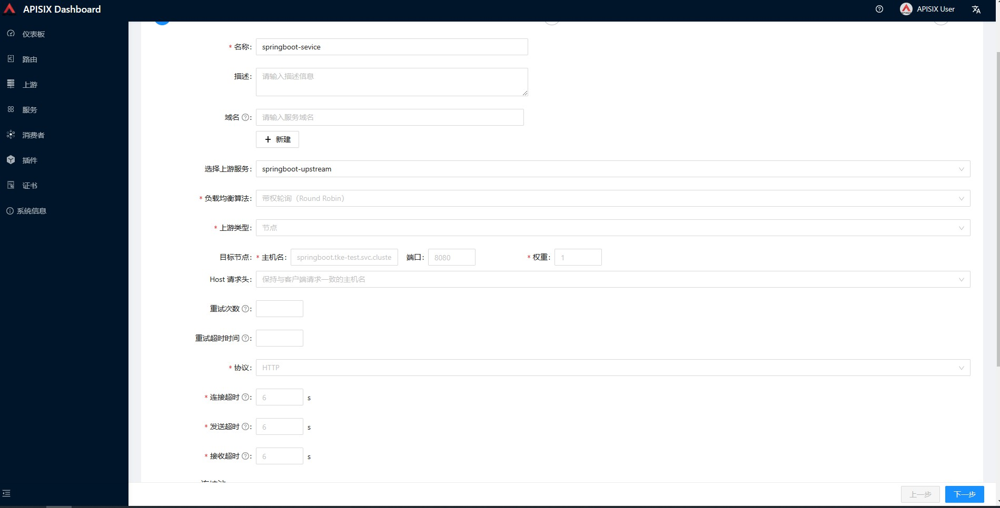
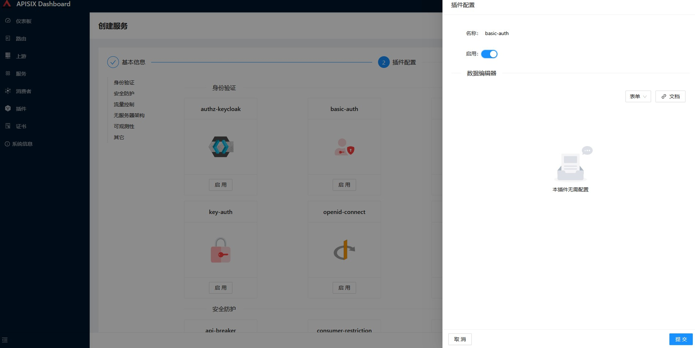
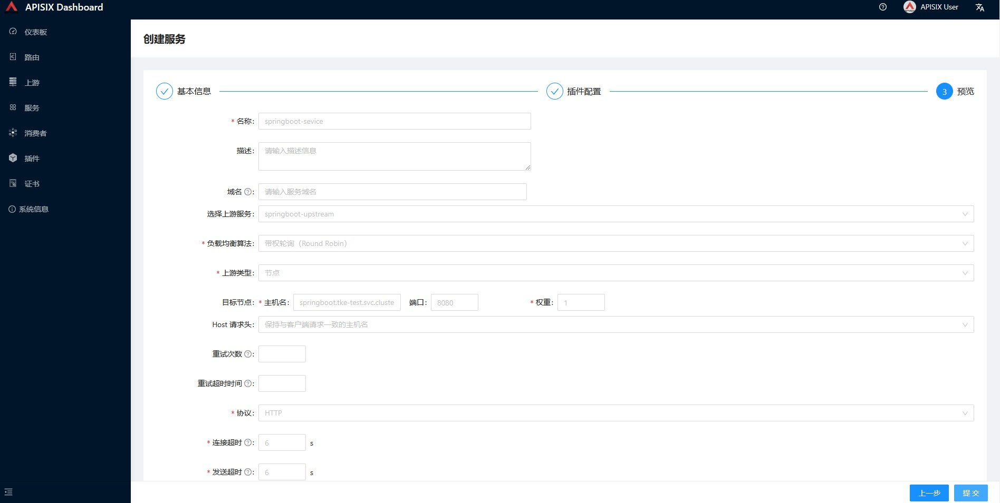
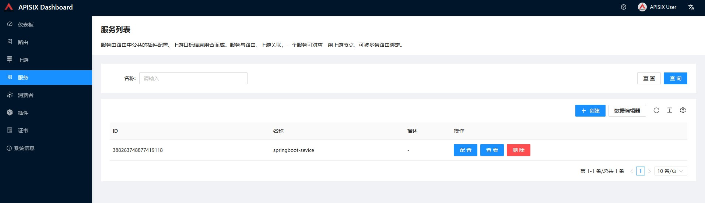
消费者 消费者是路由的消费方，形式包括开发者、最终用户、API 调用等。创建消费者时，需绑定至少一个认证类插件。
如果有多个消费者，这里会根据请求头携带的信息，自动去匹配对应的消费者，这里我们配置2个消费者，分别绑定basic-auth，设置不同的认证信息，然后分别测试看下是否都可以登录
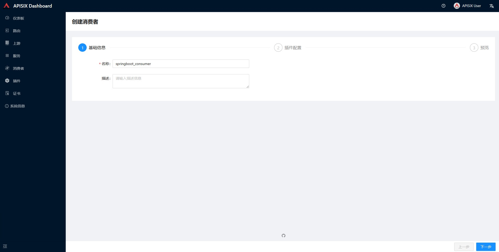
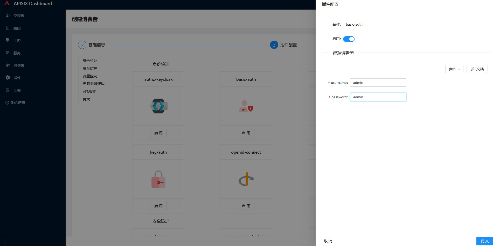
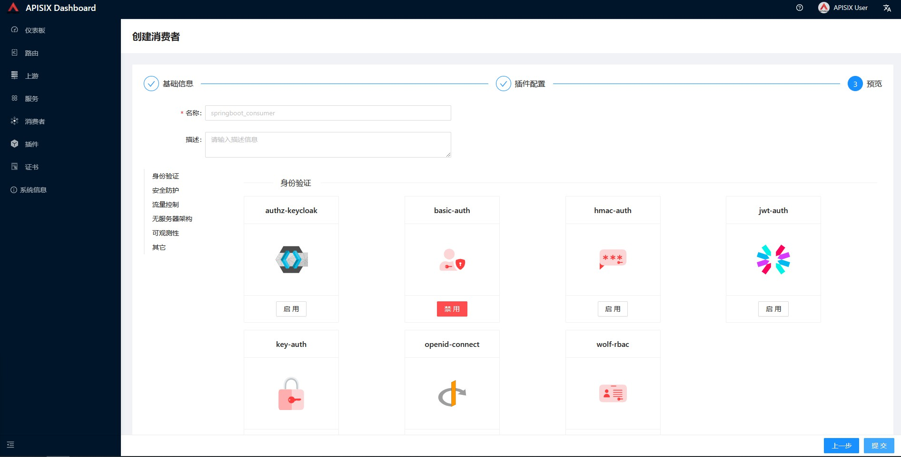
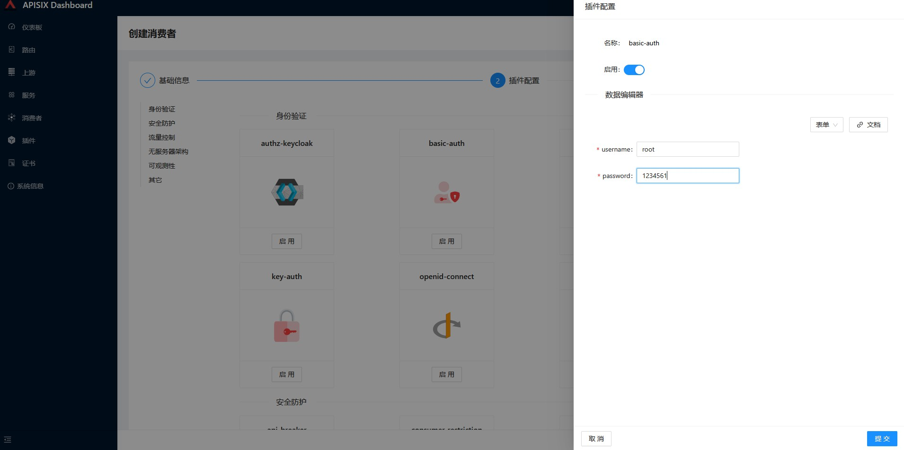
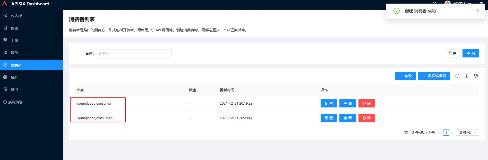
路由 路由（Route）是请求的入口点，它定义了客户端请求与服务之间的匹配规则。路由可以与服务（Service）、上游（Upstream）关联，一个服务可对应一组路由，一个路由可以对应一个上游对象（一组后端服务节点），因此，每个匹配到路由的请求将被网关代理到路由绑定的上游服务中。
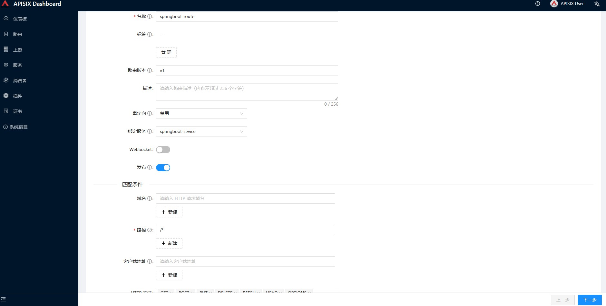
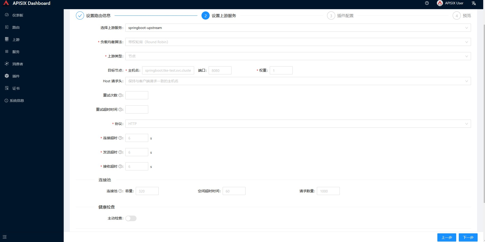
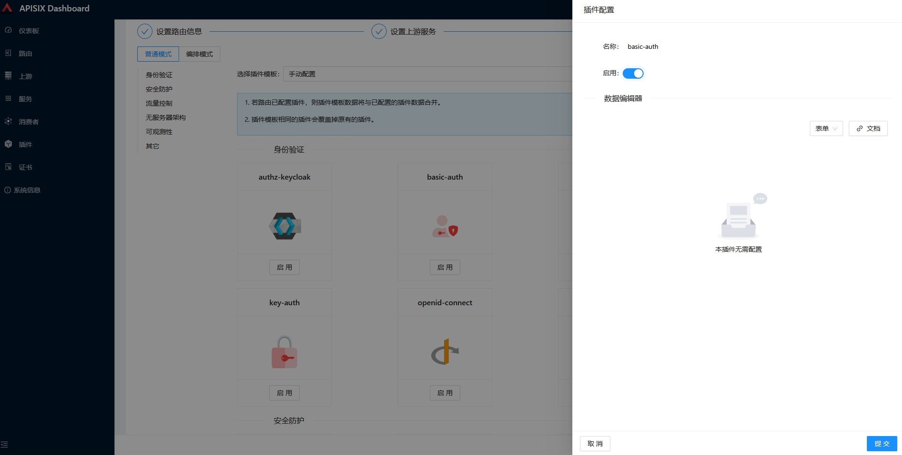
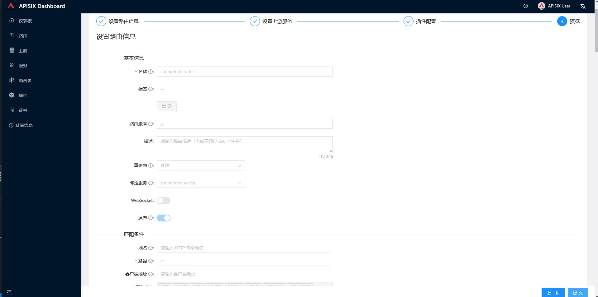
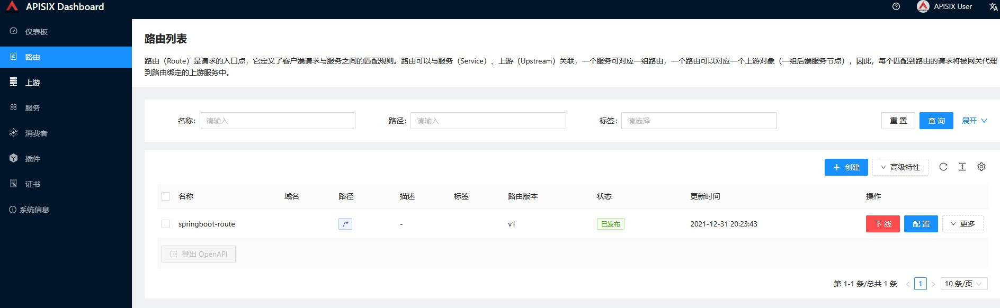
通过apisix-gateway的service访问springboot服务 apisix-gateway的service是用的clb，这里我们通过clb的vip访问下后端的springboot服务看下。
1 2 3 4 5 6 [root@ VM-0 -13 -centos ~]# curl http: {"message" :"Missing authorization in request" } [root@ VM-0 -13 -centos ~]# curl -u admin:admin http: you access path is root [root@ VM-0 -13 -centos ~]# curl -u root:123456 http: you access path is root
从上面的测试结果可以看出，我们的basic-auth生效了，不加账号密码是无法访问服务的，并且这里2个消费者都生效了。
通过yaml配置路由访问 配置ApisixRoute提供路由访问 首先我们部署下httpbin服务到集群中
1 2 kubectl run httpbin kubectl expose pod httpbin
接下来创建一个ApisixRoute用来通过服务访问
1 2 3 4 5 6 7 8 9 10 11 12 13 14 15 16 17 kubectl apply -f - <<EOF apiVersion: apisix.apache.org/v2beta2 kind: ApisixRoute metadata: name: httpserver-route spec: http: - name: rule1 match: hosts: - local.httpbin.org paths: - /* backends: - serviceName: httpbin servicePort: 80 EOF
然后我们通过Apisix-getaway的入口service来访问httpbin服务
1 2 3 4 5 6 7 8 9 10 11 12 13 14 15 16 17 [root@VM -0 -13 -centos ~]# curl http://10.0.21.21/headers -H 'Host: local.httpbin.org' { "headers" : { "Accept" : "*/*" , "Host" : "local.httpbin.org" , "User-Agent" : "curl/7.29.0" , "X-B3-Sampled" : "0" , "X-B3-Spanid" : "f5da42b3650e5b56" , "X-B3-Traceid" : "9610fc22dd3bbd63f5da42b3650e5b56" , "X-Envoy-Internal" : "true" , "X-Forwarded-Host" : "local.httpbin.org" } } [root@VM -0 -13 -centos ~]# curl http://10.0.21.21/ip -H 'Host: local.httpbin.org' { "origin" : "10.0.0.10" }
配置Ingress提供路由访问 这里配置ingress，apisix-ingress-controller会将规则同步到apisix，一般ingress和ApisixRoute不要同时配制，配置一个即可。
1 2 3 4 5 6 7 8 9 10 11 12 13 14 15 16 17 18 19 20 apiVersion: networking.k8s.io/v1beta1 kind: Ingress metadata: name: httpserver-ingress annotations: kubernetes.io/ingress.class: apisix spec: rules: - host: local.httpbin.org http: paths: - backend: serviceName: httpbin servicePort: 80 path: / pathType: Prefix
配置好，直接通过Apisix-getaway的入口service来访问httpbin服务
1 2 3 4 [root@VM -0 -13 -centos ~]# curl http://10.0.21.21/ip -H 'Host: local.httpbin.org' { "origin" : "10.0.0.10" }
欢迎访问 Vashon 的博客，博客和文章在完善中，请大家耐心等待。 若有问题或者有好的建议欢迎留言，笔者看到之后会及时回复。
为正常使用来必力评论功能请激活JavaScript